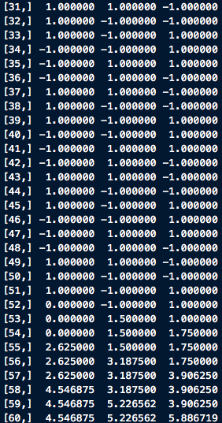
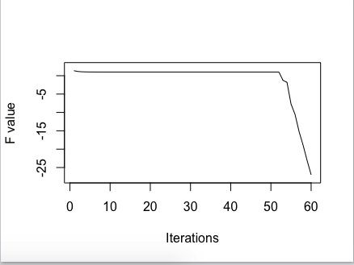

Convergence Analysis for Block Coordinate Decent Algorithm and Powell's Examples
We mainly focus on the convergence of Block coordinate decent with exact minimization, whose block update strategy employs Gauss-Seidel manner. And then use Powell's example to see what will happen if some conditions are not met.
Reference: 1. Dimitri .P Bertsekas, Nonlinear Programming 2ed 2. Powell ,1973, ON SEARCH DIRECTIONS FOR MINIMIZATION ALGORITHMS
Problem description
Notations
We want to solve the problem:
\[\mathop{min}_{x\in X}\quad f(x)\]
where X is a Cartesian product of closed convex sets $X_1,...,X_m:X=_{i=1}^n X_i $
We assume that \(X_i\) is a closed convex subset of \(R^{n_i}\) and \(n=\sum_{i=1}^m n_i\). The vector is partitioned into \(m\) block(s) such that \(x_i \in X^{n_i}\).
We denote \(\nabla_i f\) as the gradient of \(f\) with respect to component \(x_i\).
Assumption
We shall assume that for every \(x\in X\) and \(i=1,2,...m\) the optimization problem
\[\mathop{min}_{\xi\in X_i}\quad f(x_1,...,x_{i-1},\xi,x_{i+1,....,x_m})\]
has at least one solution.
Algorithm
The Gauss-Seidel method, generates the next iterate \(x^{k+1}=(x^{k+1}_1,...,x^{k+1}_m)\), given the current the iterate \(x^{k}=(x^{k}_1,...,x^{k}_m)\), according to the iteration
\[x^{k+1}_i=\mathop{argmin}_{\xi\in X_i}\quad f(x_1^{k+1},...,x^{k+1}_{i-1},\xi,x^k_{i+1},...,x_m^k)\]
Convergence Analysis
Theorem Suppose that \(f\) is continuously differentiable over the set \(X\) defined as above. Furthermore, suppose that for each \(i\) and \(x\in X\),
\[f(x_1,...,x_{i-1},\xi,x_{i+1,....,x_m})\]
viewed as a function of \(\xi\), attains a unique minimum \(\bar x_i\) over \(X_i\) and is monotonically non-increasing in the interval from \(x_i\) to \(\bar \xi\). Let \(\{x_k\}\) be the sequence generated by the block coordinate method with Gauss-Seidel manner. Then, every limit point of \(\{x_k\}\) is a stationary point.
PROOF
Let
\[z_i^k=(x_1^{k+1},...,x_i^{k+1},x_{i+1}^k,...,x_m^k)\]
By the nature of this algorithm, for all \(k\geq 0\), we have following inequality
\[f(x^k)\geq f(z_1^k)\geq f(z_2^k)\geq ...\geq f(z_{m-1}^k)\geq f(x^{k+1}) \quad (*)\]
Since \(\{x_k\}in X\), we can assume \(\{x^{k_j}\}\) is the subsequence that converges to \(\bar x=(\bar x_1,..,\bar x_m)\).
Now we want prove that \(\bar x\) is the stationary point of \(f\).
From (*), we know that
\[f(z_1^{k_j})\leq f(x_1,x_2^{k_j},..., x_m^{k_j})\qquad \forall x_1\in X_1\]
Let \(j\rightarrow +\infty\), we derive
\[f(\bar x)\leq f(x_1,\bar x_2,..., \bar x_m)\overset \Delta = h(x_1)\qquad \forall x_1\in X_1\]
which implies that \(\bar x_i\) is the minima of \(h(x_1)\) on \(X_1\). Using the optimality over a convex set, we conclude that
\[h'(\bar x_1)(\bar x_1 -x_1)\geq 0 \Leftrightarrow (x_1-\bar x_1)^T\nabla_1f(\bar x_1)\geq 0\qquad x_1\in X_1\]
At this stage, if we can prove that \(\{z_1^{k_j}\}\) converges to \(\bar x\), we can show that
\[ (x_2-\bar x_2)^T\nabla_2 f(\bar x_2)\geq 0\qquad x_2\in X_2\], since
\[f(z_1^{k_j})=f(x_1^{k_j+1},x_2^{k_j},x_3^{k_j},...,x_m^{k_j})\leq f(x_1^{k_j+1},x_2,x_3^{k_j},...,x_m^{k_j})\qquad x_2\in X_2\]
Let \(j\rightarrow +\infty\), we derive
\[f(\bar x)\leq f(\bar x_1,\bar x_2,\bar x_3,..., \bar x_m)\qquad \forall x_2\in X_2\]
and
\[(x_2-\bar x_2)^T\nabla_2f(\bar x_2)\geq 0\qquad x_2\in X_2\]
(Note: Although \(x_1^{k_j+1}\) may not in the sequence \(\{x_1^{k_t}\}_{t\geq 1}\) ,which convergences to \(\bar x_1\), but \(\{z_1^{k_j}\}\) converges to \(\bar x\), so its component \(x_1^{k_j+1}\) converges to \(\bar x_1\)).
Furthermore, if we prove that for \(i=1,2,...,m-1\),\(\{z_i^{k_j}\}\) convergences to \(\bar x\), then we have
\[(x_i-\bar x_i)^T\nabla_i\;f(\bar x_i)\geq 0\qquad x_i\in X_i\]
And thus \(\bar x\) is a stationary point, since \((x-\bar x)^T\nabla f(\bar x)\geq 0\)
By far, it remains to prove that \(\{z_i^{k_j}\}\quad,\forall i\) convergence to \(\bar x\). First,we try to prove that \(\{z_1^{k_1}\}\) convergence to \(\bar x\).
Assume the contrary that \(r^{k_j}=\vert \vert z_1^{k_j}-x^{k_j}\vert \vert\) doesn't convergence to 0. Let \(s_1^{k_j}=(z_1^{k_j}-x^{k_j})/r^{k_j}\). Thus, \(z_1^{k_j}=x^{k_j}+r^{k_j}s_1^{k_j}\) , \(\vert \vert r_{k_j}\vert \vert =1\) and \(s_1^{k_j}\) differs from 0 only along the first block-component. Since \(\{s_1^{k_j}\}\) belong to a compact set and therefore without loss of generality, we assume \(s_1^{k_j}\) convergences to \(\bar s_1\).
Since \(r^{k_j}>0\),we can find a \(\epsilon\in (0,1)\), such that \(x^{k_j}+\epsilon s_1^{k_j}\) lies on the segment joining \(x^{k_j}\) and \(x^{k_j}+s_1^{k_j}=z_1^{k_j}\). Using the non-increasing property of \(f\),we derive,
\[f(z_1^{k_j})\leq f(x^{k_j}+\epsilon s_1^{k_j}) \leq f(x^{k_j})\]
Again, using (*), we conclude
\[f(x^{k_{j+1}})\leq f(z_1^{k_j})\leq f(x^{k_j}+\epsilon s_1^{k_j}) \leq f(x^{k_j})\]
Let \(j\rightarrow +\infty\), we derive \(f(\bar x)=f(\bar x+\epsilon \bar s_1)\), which contradicts the hypothesis that \(f\) is uniquely minimized when viewed as a function of the first block component. This contradiction establishes that \(\{z_1^{k_1}\}\) convergence to \(\bar x\).
Similarly, let \(r_t^{k_j}=\vert \vert z_t^{k_j}-z_{t-1}^{k_j}\vert \vert\) for \(t=2,3,...,m-1\) and using the same technique shown above, we finally prove that \(\{z_i^{k_j}\},\quad \forall i\).
Powell's example
In ON SEARCH DIRECTIONS FOR MINIMIZATION ALGORITHMS, Power actually gives three examples that sequences generated by the algorithm discussed above do not convergence to stationary points once some hypothesis are not met.
The first example is straightforward, However, the remarkable properties of this example can be destroyed by making a small perturbation to the starting vector \(x^0\).
The second example is not sensitive to either small changes in the initial data or to small errors introduced during the iterative process, for example computer rounding errors.
The third example suggests that a function that is infinitely differentiable that also causes an endless loop in the iterative minimization method.
We here only presents the first example. Consider the following function
\[f(x,y,z)=-(xy+yz+zx)+(x-1)_+^2+(-x-1)_+^2+(y-1)_+^2+(-y-1)_+^2+(z-1)_+^2+(-z-1)_+^2\]
where
\[(x-c)_+^2=\begin{cases}0,x-c< 0\\ (x-c)^2,x-c\geq 0\end{cases}\]
Given the starting point \(x_0=(-1-e,1+\frac{1}{2}e,-1-\frac{1}{4}e)\) and use block coordinate decent algorithm,and we update the variable in a manner of \(x\rightarrow y\rightarrow z\rightarrow x ...\) with
\[x_{k+1}^{**}\leftarrow \text{sign}(y_k+z_k)[1+\frac{1}{2}\vert y_k+z_k\vert ]\]
\[y_{k+1}^{**}\leftarrow \text{sign}(x_{k+1}+z_k)[1+\frac{1}{2}\vert x_{k+1}+z_k\vert ]\]
\[z_{k+1}^{**}\leftarrow \text{sign}(x_{k+1}+y_{k+1})[1+\frac{1}{2}\vert x_{k+1}+y_{k+1}\vert ]\]
We here present the first six steps of this case
| cycle/totall iteration | x | y | z |
|---|---|---|---|
| 1/1 | 1+\(\frac{1}{8}e\) | 1+$e $ | -1-\(\frac{1}{4}e\) |
| 1/2 | 1+\(\frac{1}{8}e\) | -1-\(\frac{1}{16}e\) | -1-\(\frac{1}{4}e\) |
| 1/3 | 1+\(\frac{1}{8}e\) | -1-\(\frac{1}{16}e\) | 1+\(\frac{1}{32}e\) |
| 2/4 | -1-\(\frac{1}{64}e\) | -1-\(\frac{1}{16}e\) | 1+\(\frac{1}{32}e\) |
| 2/5 | -1-\(\frac{1}{64}e\) | 1+\(\frac{1}{128}e\) | 1+\(\frac{1}{32}e\) |
| 2/6 | -1-\(\frac{1}{64}e\) | 1+\(\frac{1}{128}e\) | -1-\(\frac{1}{256}e\) |
| 3/7 | 1+\(\frac{1}{512}e\) | 1+\(\frac{1}{128}e\) | -1-\(\frac{1}{256}e\) |
| ... | ... | ... | ... |
This result implies that the sequence obtained by this algorithm can not converge to one single point since \(x-coordinate\) change its sign as the even cycle and odd cycle alternate. Situations are similar for \(y-coordinate\) and \(z-coordinate\).
But \(\{x_k\}\) has six sub-sequences which convergence to (1,1,-1), (1,-1,-1), (1,-1,1), (-1,-1,1),(-1,-1,1),(-1,1,1),(-1,1,-1) respectively.

Remark
A hint to derive the update formula:
\[x\leftarrow \text{sign}(y+z)[1+\frac{1}{2}(y+z)]\]
Indeed, derivates of \((x-1)_+^2\) and \((-x-1)_+^2\) are as follows respecively
\[\frac{d(x-1)_+^2}{dx}=\begin{cases}2(x-1),x\geq 1\\0,x<1\end{cases}\quad \frac{d(-x-1)_+^2}{dx}=\begin{cases}2(-x-1),x\leq -1\\0,x>-1\end{cases} \]
So for the univariate optimization problem, setting the derivate of \(g(x)=f(x,y,z)\) to zero, we conclude
\[\frac{\partial f(x,y,x)}{\partial x}=0\Rightarrow \begin{cases}x\geq 1: x=1+\frac{1}{2}(y+z)\\-1< x<1: -(y+z)=0\\x\leq -1:x=-1+\frac{1}{2}(y+z) \end{cases}\]
The gradient of \(f(x,y,z)\) on this cyclic path, is \(\nabla f(x,y,z)=(-y-z,-x-z,-x-y)\) and \(\vert \vert \nabla f(x,y,z)\vert \vert _1=2\)
This example is unstable with respect to small perturbations. Small changes in the starting point \(x_0=(-1-e,1+\frac{1}{2}e,-1-\frac{1}{4}e)\) or smal errors in the numbers that are computed during the calculation will destroy the cyclic behavior.
It's s clear the choice of perturbations \(e\) plays a key role. Say, \(x_0=(-1-e_1,1+e_2,-1-e_3)\) and we have \(e_k=\frac{1}{2}(e_{k-2}- e_{k-1})\)
cycle/totall iteration x y z 1/1 1+\(e_4\) 1+\(e_2\) -1-\(e_3\) 1/2 1+\(e_4\) -1-\(e_5\) -1-\(e_3\) 1/3 1+\(e_4\) -1-\(e_5\) 1+\(e_6\) 2/4 -1-\(e_7\) -1-\(e_5\) 1+\(e_6\) 2/5 -1-\(e_7\) 1+\(e_8\) 1+\(e_6\) 2/6 -1-\(e_7\) 1+\(e_8\) -1-\(e_9\) ... ... ... ... To preserve the cyclic behavior , we have to make sure that \(e_{k-2}>e_{k-1}\)
And in practice, when we do some numerical tests, we shall find that, this theoretically-existed endless loop actual breaks down due to the rounding errors. A brief illustration is given below. In this experiment, loop ends at the 52 steps.

 As
\[\frac{\partial f(x,y,x)}{\partial x}=0\Rightarrow \begin{cases}x\geq 1: x=1+\frac{1}{2}(y+z)\\-1< x<1: -(y+z)=0\\x\leq -1:x=-1+\frac{1}{2}(y+z) \end{cases}\]suggests that, when \(-1<x<1\), the choice of \(x\) is arbitrary and we set \(x^*=0\) in the case above. So the uniqueness requirement is violated. It turns out that the six vertices are even not the stationary points.
For example, at point \(\bar x=(1,1,-1)\), \(\nabla f(\bar x)=(0,0,-2)\) and for any ponit \(x\) in the unit cubic \((x-\bar x)^T\nabla f(\bar x)\leq 0\). Say, \(x=(0.9,0.9,-0.9)\), \((x-\bar x)^T\nabla f(\bar x)=-0.2<0\)
Actually, as in the proof of
Theorem, we prove that \(\{z_1^{k_j}\}\) converges to \(\bar x\), where \(\bar x\) is the limit point of \(\{x^{k_j}\}\). But in this example, the limit point of \(\{z_1^{k_j}\}\) is (1,1,-1) while the limit point of \(\{x^{k_j}\}\) is either (-1,1,-1) or (1,-1,1). So the requirement of uniqueness is not met.
R codes for numerical experiments
####################
### Function for test ###
####################
PowellE1<-function(xstart,cycles,fig=T){
#######function part ##############
UpdateCycle<-function(x){
Sign<-function(x){
if (x>0){
return(1)
}else{
if (x<0){
return(-1)
}else{
return(0)
}
}
}
x.new<-c()
x.new[1]<-Sign(x[2]+x[3])*(1+0.5*abs(x[2]+x[3]))
x.new[2]<-Sign(x.new[1]+x[3])*(1+0.5*abs(x.new[1]+x[3]))
x.new[3]<-Sign(x.new[1]+x.new[2])*(1+0.5*abs(x.new[1]+x.new[2]))
cycle<-matrix(c(x.new[1],x[2],x[3],x.new[1],x.new[2],x[3],x.new[1],x.new[2],x.new[3]),
ncol=3,byrow=T)
return(cycle)
}
fpowell<-function(x){
PostivePart<-function(x){
ifelse(x>=0,x,0)
}
fval<-(-(x[1]*x[2]+x[2]*x[3]+x[1]*x[3]))+
PostivePart(x[1]-1)^2+PostivePart(-x[1]-1)^2+
PostivePart(x[2]-1)^2+PostivePart(-x[2]-1)^2+
PostivePart(x[3]-1)^2+PostivePart(-x[3]-1)^2
return(fval)
}
############ operation part ################
x.store<-matrix(ncol=3,nrow=cycles*3+1)
x.store[1,]<-xstart
for (i in seq_len(cycles)){
x.store[(3*i-1):(3*i+1),]<-UpdateCycle(x.store[3*i-2,])
}
x.store<-x.store[-1,]
fval<-rep(0,cycles*3)
for(i in seq_len(cycles*3)){
fval[i]<-fpowell(x.store[i,])
}
fval<-as.matrix(fval)
if (fig==T){
plot(fval,ylim=c(min(fval)-1,max(fval)+1),type="l",xlab="Iterations",ylab = "F value")
}
r<-list()
r$x.iterate<-x.store
r$fval<-fval
return(r)
}
##################
#### Test 1 ########
##################
perturb<-0.5
xstart<-c(-1-perturb,1+0.5*perturb,-1-0.25*perturb)
cycles<-20
r<-PowellE1(xstart,cycles,fig=T)
##################
#### Test 2 ########
##################
perturb<-0.5
xstart<-c(-1-perturb,1+0.5*perturb,-1-0.25*perturb)
cycles<-20
r<-PowellE1(xstart,cycles,fig=T)
##################
#### Test 3 ########
##################
xstart<-c(3,2,1)
cycles<-100
r<-PowellE1(xstart,cycles,fig=T)